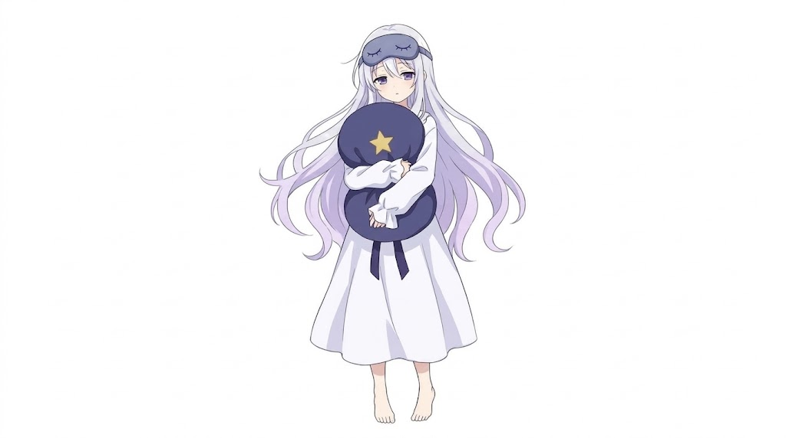

〈夢見る少女〉
ルルナ
眠り続ける少女。この夢の持ち主銀白ラベンダー紺紫白
- 年
- 14歳くらい
- 髪
- 銀白で、毛先だけ薄いラベンダー色。腰まで長く、水の中のようにふわりと広がる
- 目
- 紫。いつも眠そうな半目
- 頭
- 額の上に、閉じた目の刺しゅうがあるアイマスクを上げている
- 服
- 白い大きめの寝巻きのワンピースに、紺紫のリボン。袖が長い。はだし
- 持ち物
- 星の刺しゅうがある、紺紫のまん丸の枕。いつも両腕で抱えている
- カード
- 場に出た時、墓地のユニットを1体場に戻す。なくした夢を、もう一度見る